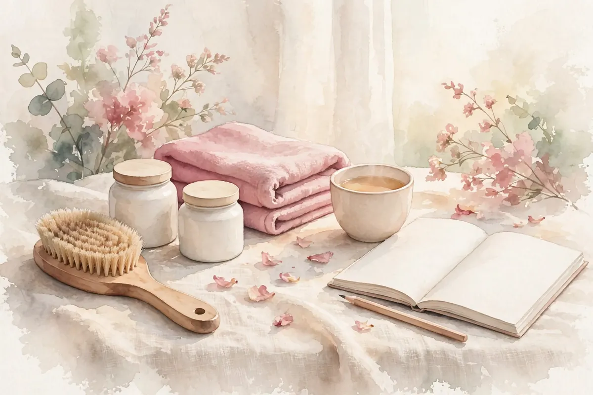

トップ ＞ ボディケア ＞ 週末にまとめてするボディケアの計画
週末にまとめてするボディケアの計画

平日は時間に追われて、ボディケアは手と顔まわりだけで精一杯、という方は多いと思います。かかとや背中、ひじといった部位は、つい後回しになります。この記事では、後回しになる部位を週末に寄せる、計画の立て方を整理します。
平日にしない部位を、週末の担当にする
まず、平日のケアと週末のケアで、担当する部位を分けます。平日は、朝と夜の短い時間で回る範囲に絞ります。週末は、かかと・足裏、背中、ひじ・ひざ、二の腕など、時間と手間のかかる部位を担当にします。
担当を分けることで、平日に「今日はできなかった」という負担が減り、週末に「ここは週末の分」と割り切れるようになります。
計画は、時間枠で決める
週末のケアは、入浴の時間と組み合わせて、30分程度の枠で設計するのがおすすめです。長風呂の日を作り、湯船の前後で部位を順に進めます。枠を先に決めると、その中でできる範囲も決まります。
週末のどちらか1日を担当日に決めておくと、予定が入った週でも、もう一方の日にずらす調整ができます。毎週完璧にこなすことより、週に1回の枠が存在し続けることの方が大切です。
道具は、週末セットとして一か所に
週末に使う道具とアイテムは、バスケットなどにまとめて一か所に置いておきます。準備の手間が減ると、始めるまでの腰が軽くなります。平日用の棚とは分けておくと、役割の区別もつきます。
計画は、部位の分担、時間枠、道具の置き場所。この3点を決めるだけで、週末のケアは回り始めます。
できなかった週の扱いも、先に決めておきます。週末に予定が入って枠が取れなかった場合、翌週に2倍の時間をかけるのではなく、その週は「できた部位だけ」で区切り、計画は翌週にそのまま持ち越します。遅れを取り戻そうとすると、計画そのものが重くなって続かなくなるからです。季節が変わったら、担当部位の組み合わせも見直します。乾燥する季節はかかとの出番が増え、汗ばむ季節は足まわりの洗い方が中心になる、といった具合です。家族と一緒に週末の枠を共有する場合は、お互いの担当部位を決めて、同じバスケットを使う方法もあります。週末のケアは、完璧な実行ではなく、枠が存在し続けることに価値がある計画です。週末の枠をカレンダーに繰り返し予定として入れておくと、他の予定との調整もしやすくなります。家族にも「この時間はケアの時間」と共有しておくと、邪魔の入りにくい静かな時間が作れます。計画は、自分との約束として軽く持ち続けることが、長続きの秘訣です。
セラフィナ「平日にしない部位は週末の担当に。30分の枠と、道具の一か所まとめがコツだよ」